Eindexamen
Debriefing
Introduction
Het nieuws is door de geschiedenis heen razendsnel geworden zodat het bijna onmogelijk wordt voor journalisten om naar de kern van de oorzaak te kijken, waardoor het nieuws misschien alleen uit is op sensatie. Dit terwijl het imago van de journalist nog altijd gezien wordt als onafhankelijk.
Waar vroeger de journalisten de personen waren die de bronnen van het nieuws controleerde voordat het gepubliceerd werd. Is het tegenwoordig voor iedereen mogelijk om nieuws de wereld in te gooien zonder dat deze op feiten gebaseerd hoeft te zijn. Fictie en non-fictie komen steeds dichter bij elkaar in het nieuws.
The assignment
In dit project wordt er een realtie tussen fictie en non-fictie in nieuws gecreeërd. Wanneer is nieuws op geruchten en wanneer is het op feiten gebasseerd? Door nieuwsfeeds van verschillende bronnen (zoals: Reuters of Twitter) te verzamelen en te ordenen, zou er een overzichtelijke "infographic" moeten ontstaan.
Voorstellen
- Andere manier van de digitale krant of digitale nieuwsbeleving
- Verschillende ramen, verschillende waarheden
- Dynamische newsfeeds
- Nieuws vs Religie
- Verschillende newsfeeds combineren
- Dramatisch nieuws met humor combineren
- Nep nieuws creeren -> nieuws manipuleren
- Anti Westerse wereld nieuws
Goal
Het doel van dit project is om mensen te informeren waar de bronnen van het nieuws vandaan komen. Op deze manier moeten mensen bewust worden dat nieuws niet altijd gebasseerd is op feiten.
Inspiration images
 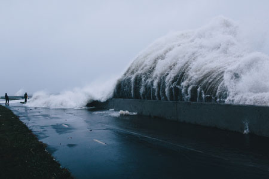
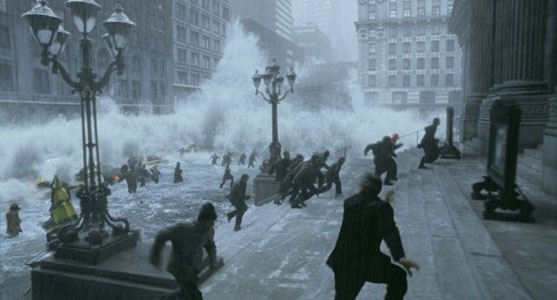
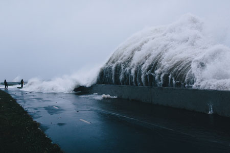
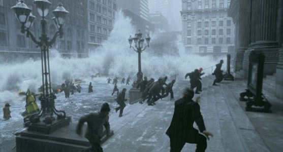

 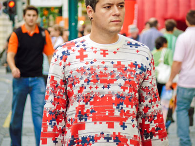
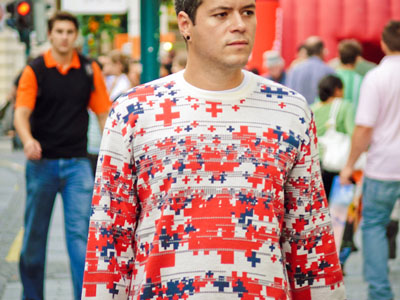


 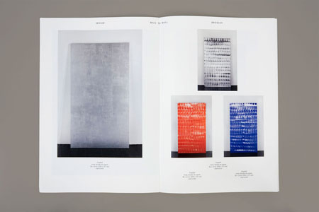
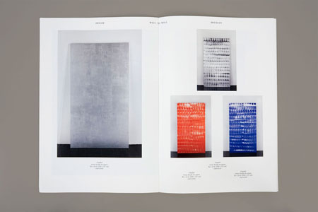
 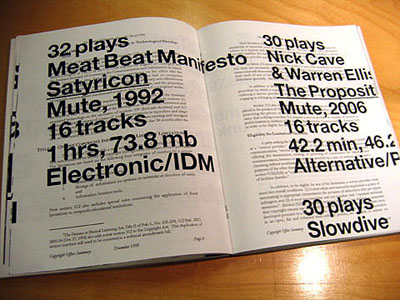
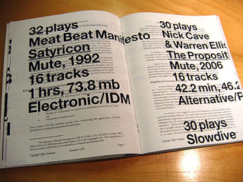
 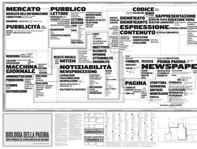
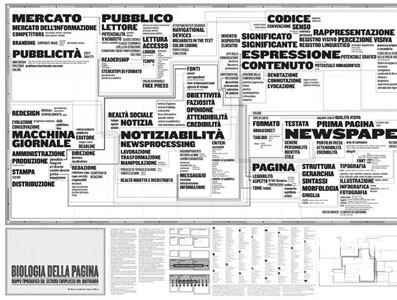


 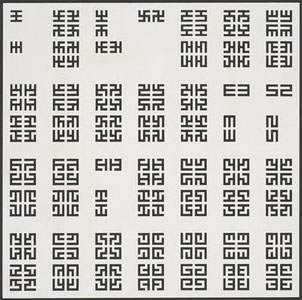
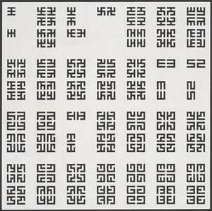


 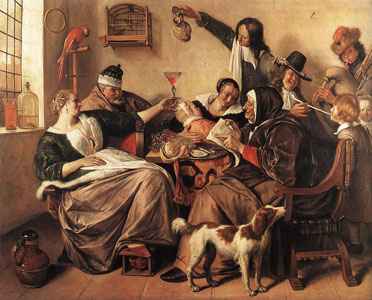
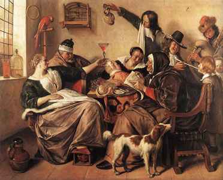